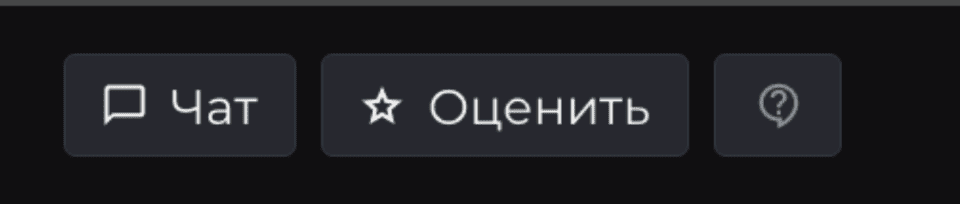
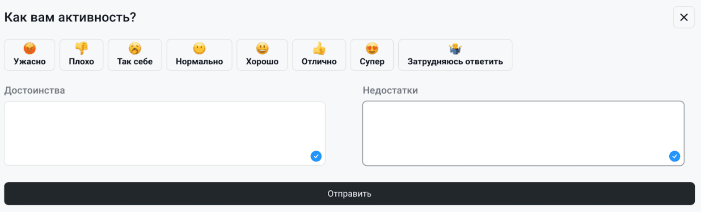
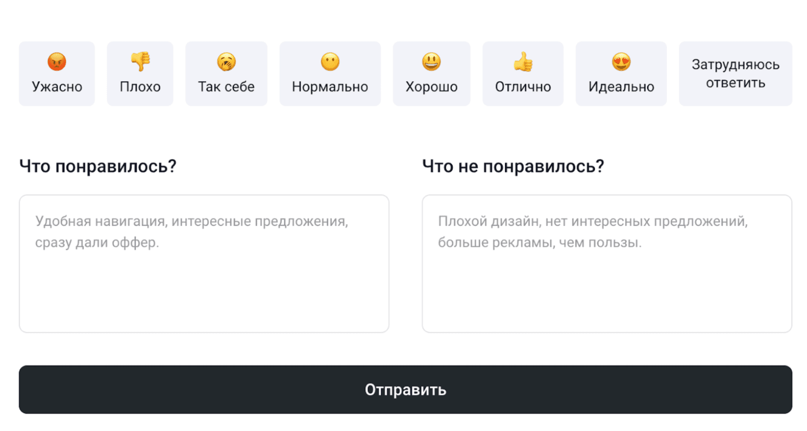
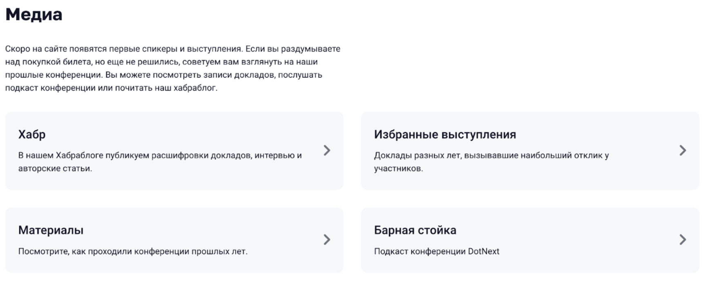

Контекст
Компания проводит конференции для программистов. У каждой конференции есть свой сайт, сделанный по общему шаблону. Сайт — важный канал коммуникации с участниками конференций, через него организаторы продают билеты, привлекают новых спикеров и получают от участников фидбек на доклады.
Кейсы
FAQ на сайте
Ситуация: на сайтах конференций в футере есть блок с контактами. На сайты добавили новый блок FAQ.
Задача: придумать формулировку, чтобы поставить ссылку новую на страницу «Вопросы и ответы».
Читать далееРешение: если написать по аналогии «Читайте FAQ», это будет выбиваться по стилистике и ссылки буду смешиваться в кучу по целям. Саппорт — это для одного, а FAQ для другого.
В таком случае можно поменять заголовок на «Нужна помощь?» или «Возникли вопросы» и далее оставить только ссылки и контакты. Так мы сокращаем лишний очевидный текст «звоните/пишите» и обозначаем цель этого блока:

Результат: повысилось количество заходов на страницу FAQ, как следствие — меньше обращений в саппорт.
СвернутьВорнинг «Упрощенная карточка»
Ситуация: дизайнер придумал оповещение о том, что упрощенная карточка (тип отображения информации о докладе) в мобильной версии включена по умолчанию.
Задача: довести текст дизайнера до ума, объяснить пользователю, почему карточка включена и что это значит.
Читать далееРешение: объяснение, почему включили такую карточку, должно быть либо нейтрально (чтобы не перегружать экран в мобильной версии), либо его вообще не должно быть. «Не отвлекало от самого важного» — это значит, что мы додумываем за людей.
В тексте написано, что настройки отображения можно вернуть в любой момент. Далее идет кнопка «пойду пробовать». Пробовать отключать? Смысл конфликтует, заголовок избыточен.
Первый вариант:
В мобильной версии мы по умолчанию включили упрощенную карточку активности. Вернуть стандартный вид можно в любой момент в настройках
Оставить так
Вернуть как было
Второй вариант:
В мобильной версии по умолчанию включена упрощенная карточка активности. Это помогает не перегружать экран информацией.
Вернуть стандартный вид можно в любой момент в настройках
Хорошо
Вернуть как было
СвернутьФорма обратной связи на сайте
Ситуация: в плеере платформы для просмотра докладов конференций есть блок обратной связи. Пользователь сразу в процессе просмотра может оставить фидбек на доклад. Оценка на сайте расходится со шкалой оценки, которую пользователи проставляют в другой форме обратной связи (в СервиМанки). В плеер 5-ти бальная, в опросе — 8-ми бальная. Оценки из разных источников между собой не бьются, что вызывает боль отдела маркетинга, который всё это анализирует.
Запрос от отдела маркетинга: придумать вариант вопроса для фидбека, посмотреть на варианты ответа в шкале, написать тексты пользовательских подсказок.
Читать далее
Решение:
Недостатки текущей формы обратной связи в плеере:
- Пользователя заставляют думать — нет подсказок, непонятно, что происходит после того или иного действия. Что происходит, когда пользователь нажимает на звездочки? Ответ автоматически записывается в систему? Или ответ не записывается, пока пользователь не нажмет на кнопку «Отправить» в конце формы?
- Недружелюбный вид форм — после того, как оставляем отзыв, не происходит ничего — нет слов благодарности, нет инфы, что отзыв учтен и так далее. Если отзыв записывается, когда человек нажал на звёздочку, то здорово добавить уведомление на секунду-две «Спасибо за вашу оценку!». Идеально кастомизировать этот текст в зависимости от оценки. Например, ставит 1 — «Нам жаль, что доклад вам не понравился. Хотите рассказать подробней, что именно было не так?» И т. п.
- Неоправданно громоздкие поля на странице после завершения доклада — кажется, что нужно писать туда целое сочинение, что пугает; пользователь не видит весь экран; не видит кнопку «Оставить отзыв».
Когда завершается доклад и появляется окно, не хватает CTA — заголовок не работает на цель получить фидбек. Вместо «Доклад завершен», нужно сделать большой заголовок «Оцените доклад», далее чуть меньше название доклада.
Дальше нужно понять, что происходит после нажатия на нужную звездочку. Это конец отзыва? Или обязательно надо написать комментарий? Кнопка «Оставить отзыв» работает независимо от проставленной оценки. Здесь непонятно для пользователя, идет лишняя когнитивная нагрузка.
Что сделано:

Результат: повысилось количество фидбека, получаемого через сайт.
СвернутьЧто посмотреть, пока нет докладов
Ситуация: в начале каждого сезона сайт конференций практически пустой. Там еще нет информации о спикерах и докладчиках. Есть ссылка на Хабраблог компании в футере, но ее мало кто замечает.
Задача: добавить на сайт полезный контент, пока нет информации о новых спикерах и докладах.
Читать далееРешение:
Добавили блок «Медиа», где размещаются ссылки на релевантный полезный контент. Когда докладов на сайте нет, блок идет сразу после описания конференции на главной странице.
Свернуть
Страница 404
Ситуация: на конференционных сайтах давно не обновлялась страница 404. В самом сообщении нет ссылок, дизайн выглядит не слишком дружелюбным.
Задача: Провести ресерч, сделать user-friendly копирайтинг. Например, «упс, что-то пошло не так». Отразить базовые способы решения часто возникающих проблем: перелогиньтесь или обновите страницу с кэшом. + может быть указать ссылки на возможно нужные страницы (главная, расписание) + ссылка на саппорт.
Читать далееРешение:
В подвале сайта куча разных ссылок, давать дополнительные ссылки в информационном сообщении может быть избыточно. Как вариант, сделать страницу 404 по типу формочки подписки на Главной и туда добавить ссылки в виде кнопок, чтобы они выделялись на всей странице.
В разные моменты времени на конф. сайте может быть разное количество разделов. Некорректно будет давать ссылку на страницу Доклады или Подача заявки. В информационном сообщении мы ограничены главной страницей, архивом и календарем конференций на головном сайте jugru. org.
Вариант 1:
404
Сбой в матрице
*пиксельная утка в черных очках в стиле Нео, утка — маскот компании*
Попробуйте обновить страницу, либо перезайти в Личный кабинет.
1 кнопка: Перейти на главную
2 кнопка: Посмотреть доклады прошлых лет (архив)
Вариант 2:
404
Кажется, такой страницы нет
*недоумевающая утка*
Но зато есть кое-что поинтереснее:
1 кнопка: Про конференцию (главная)
2 кнопка: Записи докладов (архив)
3 кнопка: Другие конференции (сайт jugru.org)
Вариант 3:
404
Мы не нашли эту страницу
*утка с лупой*
Попробуйте перезагрузить страницу или перейти на Главную (ссылка). Там много всего интересного
Свернуть